Portfolio Deck
Henry Lim
게임 라이브 서비스 PM·디렉터 · 19년
사용자 요구로 제품 방향을 정하고, 마일스톤으로 출시와 라이브까지 완주합니다.
이메일bluedaylol80@gmail.com
사이트bluedaylol80.github.io/henry-portfolio/
한눈에
19년
총 경력
10개
함께한 회사
183억
린 매출(앱스토어·구글 3위)
30개
직접 참여한 프로젝트(퍼블리싱 8종, 직접 서비스 22종)
게임 명칭은 각 권리자의 상표입니다.
Career Milestone
2006.04 – 2007.10
SUN 운영팀
2008.05 – 2011.07
한게임운영실 파트장
2011.07 – 2015.02
전략사업팀 사업PM
2015.03 – 2015.07
KON 스튜디오 사업PM
2015.07 – 2019.10
모바일사업실 팀장
2019.10 – 2020.04
스튜디오 개발PM
2020.07 – 2021.02
사업팀 팀장
2021.02 – 2021.10
스노우볼 스튜디오 기획 팀장
2022.02 – 2024.04
사업팀 파트장
2024.10 – 2026.07
라이브기획팀 팀장 · 라이브 디렉터
게임 명칭은 각 권리자의 상표입니다.
역량 4분류
조사·지표로 무엇을 만들지 정하고, 기획·개발 마일스톤으로 실행까지 끌고 가는 디렉터·PM 역할
소프트런칭부터 런칭·라이브 서비스·서비스 종료까지, A~Z 모든 단계를 직접 진행
인력 리크루트부터 인력 배치, MM을 활용한 조직 세팅과 인력 효율 개선
반복, 비효율적인 업무를 규칙과 프로세스를 재정비하여 효율화
게임 명칭은 각 권리자의 상표입니다.
대표 사례 3
문제 → 판단 → 행동 → 결과 순서로 씁니다. 각 장의 근거 링크에서 근거까지 볼 수 있습니다.
달콤소프트 · 라이브기획팀 팀장 · 라이브 디렉터
출시 3건
미니게임 v1·v2 · 꾸미기 이벤트 · 10주년 웹뷰 이벤트
지표 분석과 만족도 설문(유저 VOC)으로 2026 상반기 방향성을 제안하고, 프로토타입 제작과 실제 출시로 연결하다
실제 출시
넥슨 코리아 · 모바일사업실 — 팀장
183억
매출 · 2019년 누적
3개국 소프트런칭 지표로 상품·재화·초반 동선 개선안을 정리해 글로벌 출시에 들어가다
프로젝트 실제 출시
원더피플/에이스톰 · 사업팀 — 파트장
33만+
한국 신규 유저 누적
중국 서비스의 결제·서버 선택 흐름을 한국 퍼블리셔 규격으로 다시 정의하다
프로젝트 실제 출시
게임 명칭은 각 권리자의 상표입니다.
사례 1 · 진단
달콤소프트 · 라이브기획팀 팀장 · 라이브 디렉터 · 2025.11 만족도 설문 → 2026.05 출시
현재 서비스의 핵심 GAP
“우리가 잘하는 것”과 “팬이 원하는 것”의 교집합을 제품으로 만든다
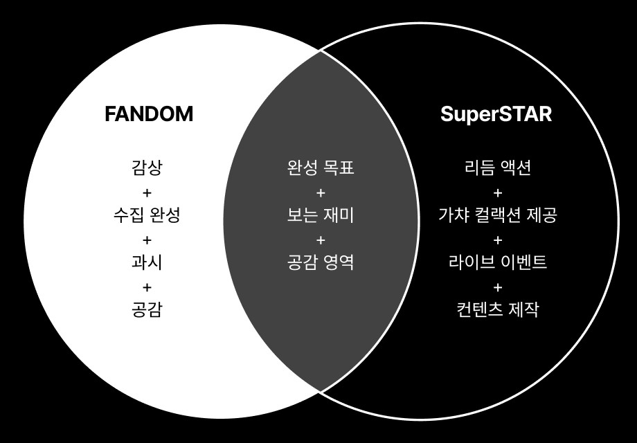
설문 수치 장표는 비공개
화면은 내부 정보를 제거한 공개용 요약본입니다 · 상표·저작권은 달콤소프트에 있습니다.
사례 1 · 방향 제안
「SuperStar 2026 — 2026 상반기 라이브 프로젝트 방향성」 작성 · 방향 4축(원문 3대 핵심 전략 방향)
수집 완성
1. 수집 구조의 재정의
"단순 획득에서 완성하는 경험으로"
도감을 채우고 완성하는 성취감 · 단기/장기 목표 보상 설계
감상/전시
2. 뷰잉 및 전시 경험 강화
"작은 썸네일에서 감상 가능한 화면으로"
큰 화면 감상 UI · 꾸미기(Deco)
꾸미기 이벤트로 실행
개인화
3. 개인화 & 커뮤니티
My Artist Mode
엔터 전체 vs 내 아티스트
커뮤니티
3. 개인화 & 커뮤니티
"혼자 보는 수집에서, 서로 반응하는 공감으로"
덱/프로필 방문 · 아티스트 공통 미션
개발 방향 적용
2026년 상반기 로드맵
마일스톤 배치를 통한 개발 일정 조정
기획 방향과 프로토타입 제작
미니게임 → 꾸미기 이벤트 → 웹뷰 이벤트 순 출시
개발 리소스가 제한된 상황이라, 기존 시스템으로 바로 적용할 수 있는 인게임 미니게임을 먼저 준비·적용하고, 별도 개발이 필요한 웹뷰 이벤트는 그 뒤에 확장하는 순서로 갔다.
대응 순서와 이벤트 범위(MVP)는 본인이 정했고, 개발 일정과 출시일은 개발팀·경영진 협의로 확정했다.
게임 명칭은 각 권리자의 상표입니다.
사례 1 · 실행
출시 타임라인
2025.12
미니게임 v1
기존 시스템으로 바로 적용할 수 있는 형식부터
2026.01
미니게임 v2
타이틀별 순차 적용
2026.04.30 – 05.23
꾸미기 이벤트
뷰잉 및 전시 경험 강화
SuperStar STAYC 신규 그룹 런칭에 맞춰 핵심 기능만 출시
Wireframe은 Claude Code 활용
~2026.05
10주년 웹뷰 이벤트
SuperStar JYP Nation
웹뷰 이벤트 부활
프로토타입은 Codex 활용
결과
출시 3건
미니게임 v1·v2
꾸미기 이벤트
10주년 웹뷰 이벤트
프로토타입
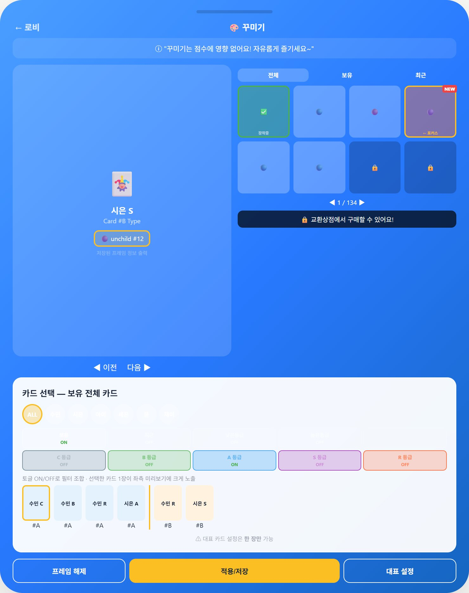
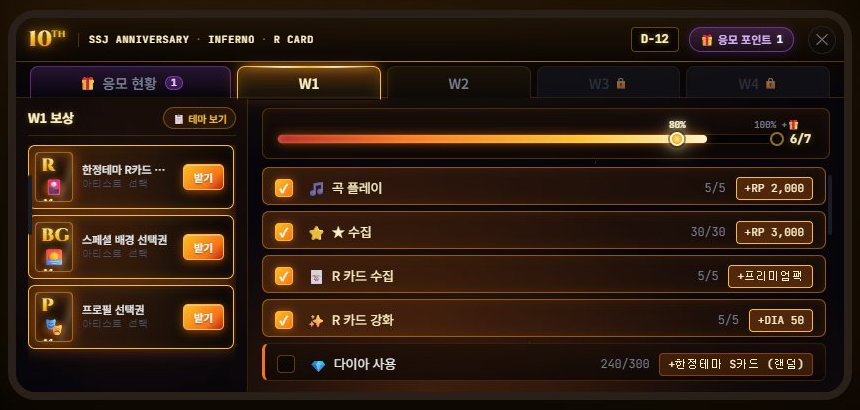
화면은 내부 정보를 제거한 공개용 요약본입니다 · 상표·저작권은 달콤소프트에 있습니다.
사례 2 · 판단
넥슨 코리아 · 모바일사업실 — 팀장
호주말레이시아필리핀
상품 재구성거래소 시점/전용 상점초반 동선
2019 글로벌 그랜드런칭
소프트런칭에서 상품 구성·재화 소비·초반 이탈을 확인했다
상품·재화·초반 동선을 출시 전 개선 과제로 정리했다
개선 3건이 그랜드런칭 빌드에 반영됐다
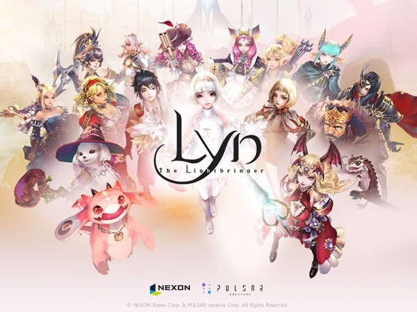
183억
매출 · 2019년 누적
게임 명칭·이미지의 상표와 저작권은 넥슨에 있습니다.
사례 2 · 실행
본인 행동
FGT(2018.06~07, 경쟁작 10종 기준 테스터 선발)와 사내 테스트(2018.11, 3일)를 모바일사업실 팀장으로 이끌고 결과를 개발 요구로 정리했다.
결과·상태
프로젝트 실제 출시(2019 글로벌 그랜드런칭). 상품 재구성 · 거래소 시점/전용 상점 · 초반 동선 개선 3건은 그랜드런칭 빌드에 반영됐다. 프로젝트 성과는 한국 앱스토어·구글 매출 최고 3위, 2019년 누적 매출 183억이며 본인 기여는 테스트 리드·빌드 개선 조율·상품/재화 개선안 범위다.
문장은 발표용으로 줄였습니다 · 전문은 사이트 상세에서 볼 수 있습니다.
1변경 전 → 2변경 후
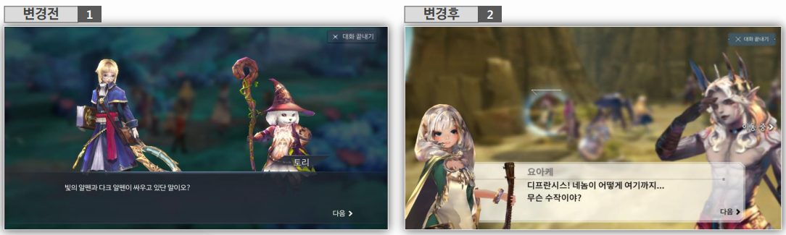
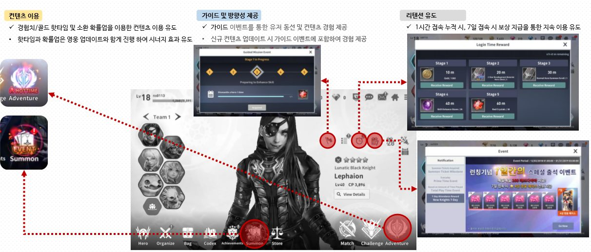
게임 명칭·이미지의 상표와 저작권은 넥슨에 있습니다.
사례 3 · 판단
원더피플/에이스톰 · 사업팀 — 파트장
퍼블리셔 플랫폼
로그인런처
중국 SDK 흐름
퍼블리셔 규격
개발사 영역
서버 선택캐릭터 생성
중국 서비스의 결제·서버 선택 흐름을 한국에 맞춰야 했다
퍼블리셔 정책과 API 문서를 기준으로 다시 정의했다
유료 재화·쿠폰이 라이브 적용되고 2023-01 한국 런칭
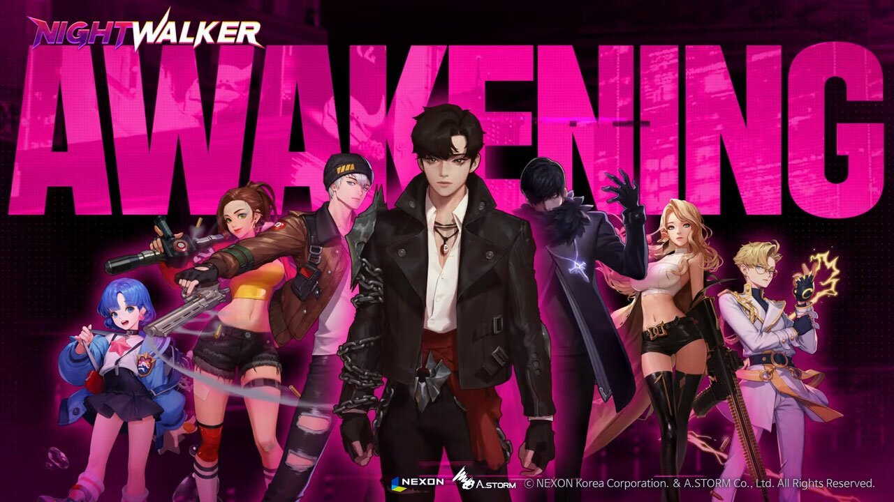
33만+
한국 신규 유저 누적
게임 명칭·이미지의 상표와 저작권은 원더피플에 있습니다. 나이트워커 개발 원더피플/에이스톰 · 퍼블리싱 넥슨.
사례 3 · 실행
본인 행동
유료 재화 구매 시스템 연동 기획, 쿠폰 시스템 기능 정의, 서버 선택창 UI/플로우 기획을 작성해 퍼블리셔·개발과 협의했다.
결과·상태
프로젝트 실제 출시(2023-01-26 한국 런칭). 유료 재화·쿠폰 기능은 라이브 적용이 기록돼 있고, 서버 선택은 기반 작업 완료 상태로 문서화돼 있다. 프로젝트 전체 성과는 한국 서비스 신규 유저 33만+이며 본인 기여는 연동, 상품, 허들 제안 범위다.
문장은 발표용으로 줄였습니다 · 전문은 사이트 상세에서 볼 수 있습니다.
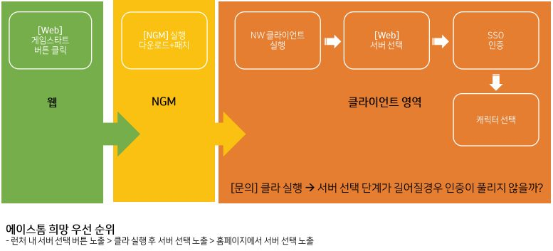
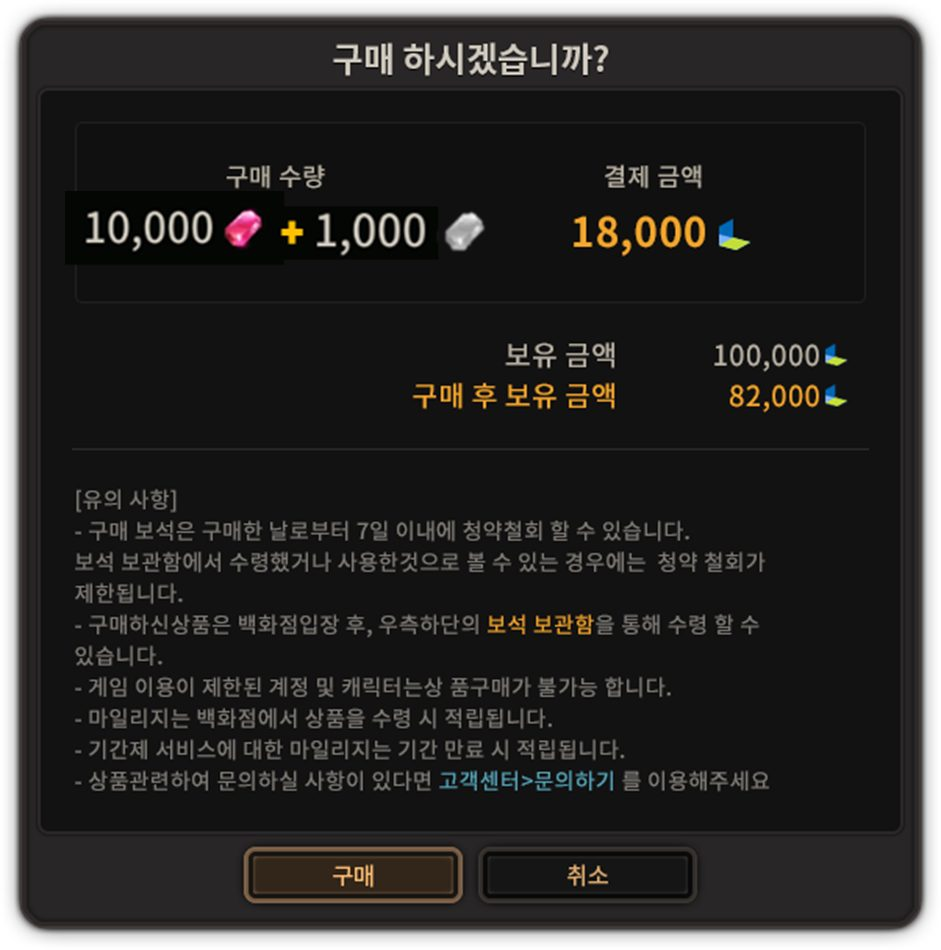
게임 명칭·이미지의 상표와 저작권은 원더피플에 있습니다. 나이트워커 개발 원더피플/에이스톰 · 퍼블리싱 넥슨.
숫자로 증명
멀티 타이틀 라이브 서비스와 사용자 기반 제품 개선
11종
SuperStar 시리즈 타이틀 11종 앱 서비스 총괄
2024.10~2026.07
린
183억
매출
2019년 누적
카오스크로니클
98억
매출
서비스 기간 누적
나이트워커
33만+
한국 신규 유저 누적
Five Stars
24억
매출
오픈 후 5개월
Shadow Seven
7개국
소프트런칭 국가 수
게임 명칭은 각 권리자의 상표입니다.
성과
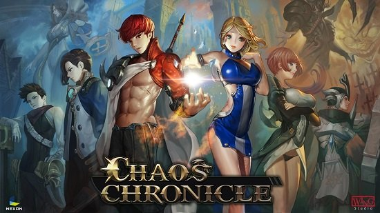
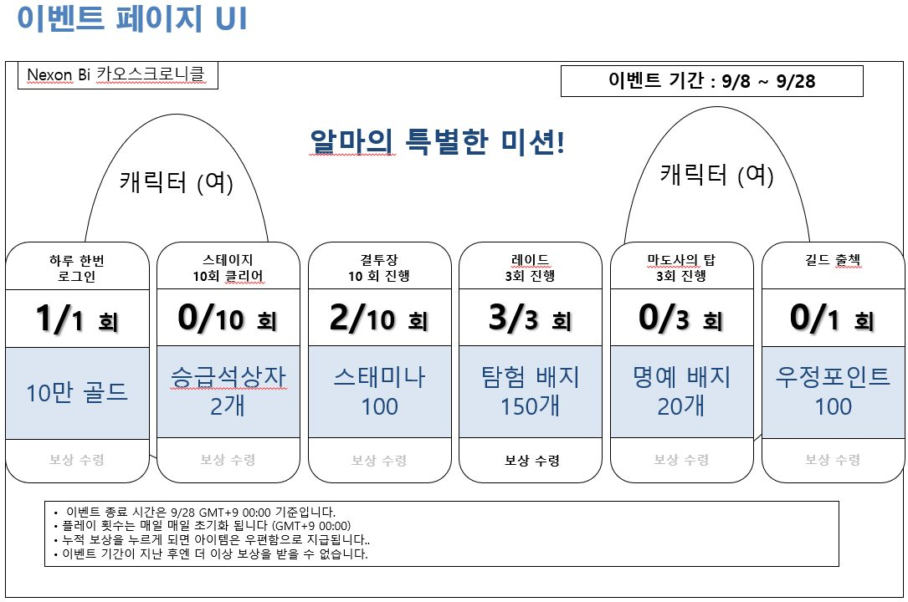
98억
매출 · 서비스 기간 누적
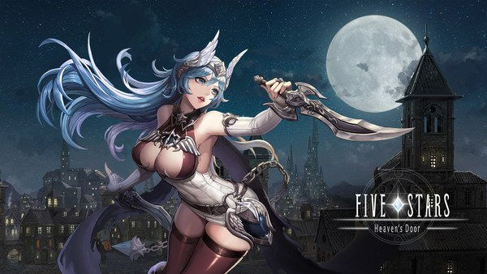
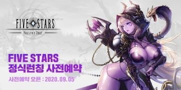
24억
매출 · 오픈 후 5개월
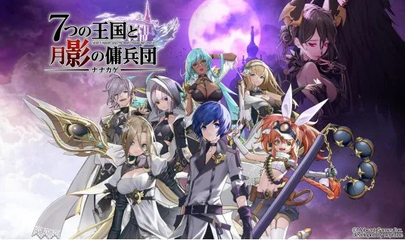
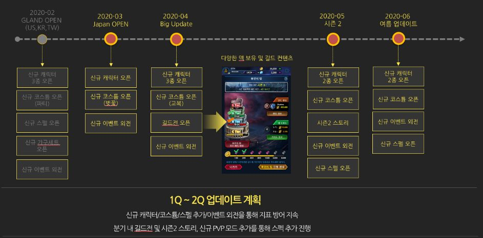
7개국
소프트런칭 국가 수
구글 평점
3.29→4.4
게임 명칭·이미지의 상표와 저작권은 넥슨·스카이피플·넵튠 레전드에 있습니다.
성과 · 슈퍼피플
원더피플/에이스톰 · 사업팀 — 파트장
채널 운영
이벤트·콘텐츠
VOC
지표 분석
보고·조치
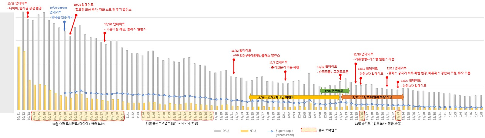
56만+
중국 신규
7.1만
중국 DAU 피크
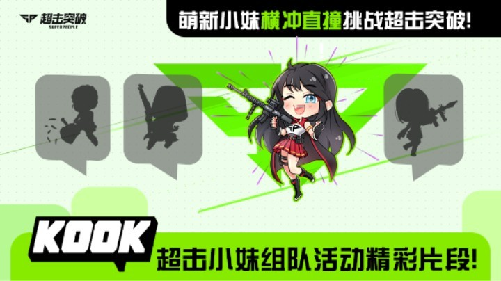
게임 명칭·이미지의 상표와 저작권은 원더피플에 있습니다.
업무 방식
문제 → 판단 → 행동 → 결과 순서로 씁니다. 각 장의 근거 링크에서 근거까지 볼 수 있습니다.
01
02
03
04
05
게임 명칭은 각 권리자의 상표입니다.
AI 프로토타입
AI를 문서 작성이 아니라, 아이디어를 실제로 작동하는 화면으로 검증하는 도구로 씁니다.
화면은 내부 정보를 제거한 공개용 요약본입니다 · 상표·저작권은 달콤소프트에 있습니다.
회사별 상세
라이브기획팀 팀장 · 라이브 디렉터 · 2024.10 – 2026.07
서비스 방향성 제시(2025 라이브 사업 계획·2026 상반기 방향성) → 개발 마일스톤 관리·지표 기반 Live-ops → 인게임 시스템 개편·업무 프로세스 개선 2025 라이브 사업 계획 ↗ 2026 상반기 방향성 ↗
사업팀 파트장 · 2022.02 – 2024.04
나이트워커 신규 33만+·DAU 6.4만·D+1 52~56% / 슈퍼피플(스팀 중국) 런칭·라이브 서비스·운영 지표 분석·경영기획실 보고, 중국 신규 56만+·중국 DAU 피크 7.1만 / 리크루트 개선 — 원티드 콜라보·PR 영상
스노우볼 스튜디오 기획 팀장 · 2021.02 – 2021.10
기획 팀장 · 알파·베타 기반 시스템 신규 10종·개편 8종 기획, 개발 마일스톤 관리 · 기획팀 채용
사업팀 팀장 · 2020.07 – 2021.02
사업·운영 조직 세팅·리크루트 후 런칭·라이브 — 사전 예약 20만·신규 28만+·매출 24억
스튜디오 개발PM · 2019.10 – 2020.04
콘텐츠 순환·BM·트래킹 시스템 기획 · 7개국 소프트런칭 → 그랜드런칭 · 구글 평점 일본 3.29 → 글로벌 4.4
모바일사업실 팀장 · 2015.07 – 2019.10
린 매출 183억·양대 마켓 3위 / 카오스크로니클 98억·7위·피처드 / 영웅의 군단 메인 PM·매출 5배
KON 스튜디오 사업PM · 2015.03 – 2015.07
KON 튜토리얼 플로우 기획·경쟁 타이틀 분석으로 런칭 기반 작업
전략사업팀 사업PM · 2011.07 – 2015.02
NTD 사내 테스트 2·FGI 4·FGT 2 설계, 5개 타이틀 유료화 분석, 남미 런칭 준비
한게임운영실 파트장 · 2008.05 – 2011.07
Tera 웹 운영 파트 관리·FUN QA 4종 게임성 분석, 아틀란티카·R2 라이브 운영
SUN 운영팀 · 2006.04 – 2007.10
SUN 온라인 런칭 라이브 운영 — VOC 분석·로그 감사
게임 명칭은 각 권리자의 상표입니다. ※ 2007.10 – 2008.05 학업 복학(강남대학교 컴퓨터공학, 2009 졸업)